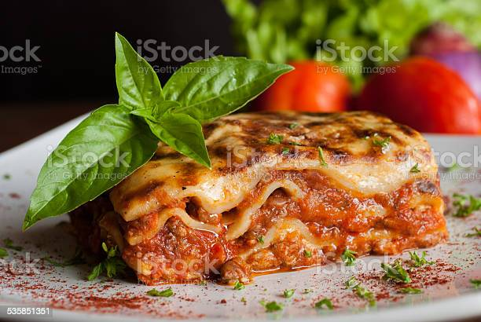

Lasagna

This classic lasagna recipe is made with an easy meat sauce as the base. Layer the sauce with noodles and cheese, then bake until bubbly!
This is great for feeding a big family and freezes well, too.
Ingredients
- 2 teaspoons extra virgin olive oil
- 1/2 medium onion, diced (about 3/4 cup)
- 1/2 large bell pepper (green, red, or yellow), diced (about 3/4 cup)
- 2 cloves garlic, minced
- 1 (28-ounce)can good-quality tomato sauce
Steps
- To freeze an unbaked lasagna: Line the pan with foil
before assembling, then assemble the lasagna as directly.
Let cool completely, and then freeze until solid. Once frozen, lift the frozen lasagna block from the casserole dish, wrap it in more foil, then freeze for up to a month.